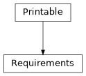

Requirements#
- class esis.optics.Requirements(resolution_spatial, resolution_spectral, fov, snr, cadence, length_observation)[source]#
Bases:
PrintableThe requirements of the ESIS optical system.
Attributes
The angular resolution of the instrument.
The required spatial resolution of the instrument.
The required spectral resolution of the instrument.
The required field of view of the instrument.
The required signal-to-noise ratio of the instrument.
The required cadence of the instrument.
The required amount of observing time.
Methods
__init__(resolution_spatial, ...)to_string([prefix])Public-facing version of the
__repr__method that allows for defining a prefix string, which can be used to calculate how much whitespace to add to the beginning of each line of the result.Inheritance Diagram
- Parameters:
- to_string(prefix=None)#
Public-facing version of the
__repr__method that allows for defining a prefix string, which can be used to calculate how much whitespace to add to the beginning of each line of the result.